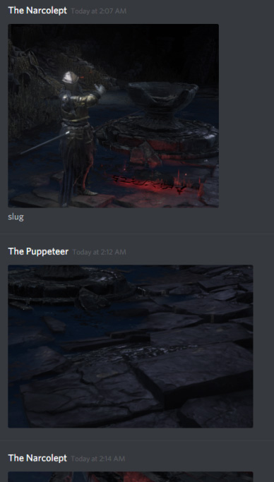
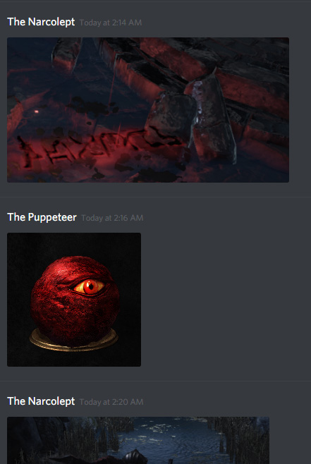
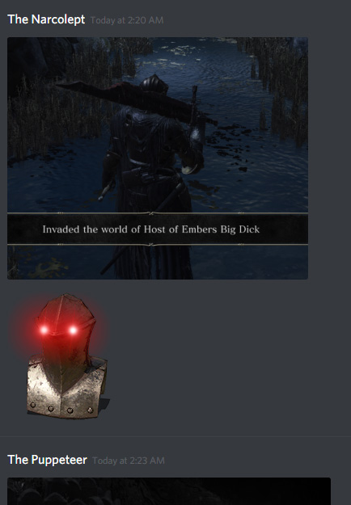
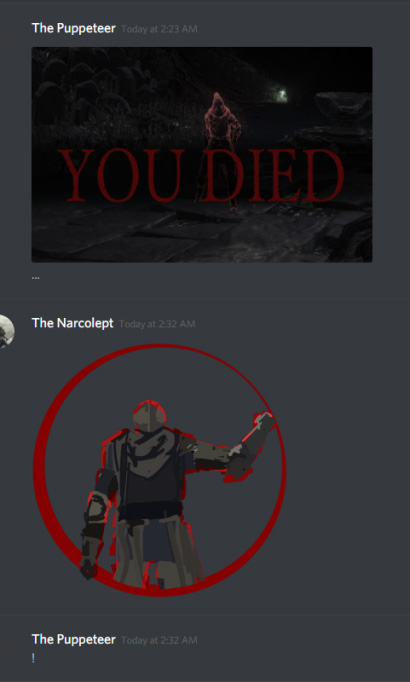

February 3, 2018
Prior to the day of the event, Raff privately received poem #35 as a sort of “I’m sorry” from the Puppeteer, because the timing of the events was unfavorable for Raff and he frequently could not join in.
The Puppeteer was away for seven nights, as was promised by #34. Seven nights later, he returned.
In similar vain to the last even, this one has been segmented into two distinct pieces—one per a puppet that got its “maintenance”.
First segment started with poem #36, which Puppeteer has sent to Kallah in private. Its content was quite puzzling, as it did not hint at any location in particular. Rather, it gave a description of the puppet we would soon be facing: “unwaking”, “elder vagrant in deep slumber”.
The search was of an exhaustive kind. Going off of the poem, we started invading through Archdragon Peak (“ancient thunder”) and Ashes of Ariandel (“frigid star”). No luck was had, so next associations were built. “Elder vagrant” gave an idea that it may be Irithyll—the area associated with White Vagrant. Untended Graves have also been suggested as a possible place of search. Neither of those ideas were correct, however White Vagrant indeed played a part in this segment.
Eventually, the “ancient thunder” led to Gwyn’s pantheon and, by consequence, Anor Londo. There at last Vulc has found Slumbering Oden at the highest peak of the cathedral. Oden has been refashioned, improved by the Father: his arm restored and wielding the giant Wolf Knight Greatshield. Astora Greatsword was replaced with Zweihander, the Partizan remained. Weapons were not scary, his buff was. Every weapon coated in special frozen weapon, proccing frostbite in two to three hits. Along with massive Zweihander damage, it was enough to take his opponents from fully healed to nigh death in a single combo. As a counter-balance, it appears that his Estus was weaker than usual.
Poem #37 was sent after we encountered him several times, shedding light on what became of the White Vagrant after previous event’s ruthless massacre. In line with the suggestion #26 gave, Father used Vagrant’s “fleeting soul” to refine Oden the Armless and restore his arm. This meant that by now the original four puppets were completely gone: Redflame Erik and Lone Darkwraith were forcefully merged into Wraithflame Erik, and Oden consumed whatever was left of White Vagrant.
Oden first appeared near the windows where Dragonslayer Greatbow was found in DS1. He then began slowly making his way out of the cathedral. At the base of the cathedral, Oden has shown the last trick he had up his sleeve. His Zweihander was capable of using not only Stomp, but also Neck Swipe and Spin Slash. He would use them passively before trying to hit the opponents, so we weren’t caught completely by surprise.
We received #38 after some time has passed. Continuing on the lore of Oden, Father ponders on the consequences of puppet’s maintenance. As would become apparent far in the future, the consequences were non-insignificant and played an important role to Father’s overarching plan.
A theory was proposed that White Vagrant’s soul was overtaking Oden’s mind.
Poem #39 strayed away from the string of lore we have been getting. It confirmed the suspicions about Wraithflame Erik—the two living beings it was made out of were enraged by their fate (yet could not overpower the Father). In contrast to that, Oden was saddened, perhaps by the brutal death of the Vagrant, and retreated to reminiscence.
What would he reminisce about? About things of great age, things that could well be considered legends by now. As this poem was sent, Oden began behaving strangely. He would now be found sleepwalking, wandering aimlessly and bumping into walls. During these times, we would have to shake him away in one way or another.
Despite being in such a comatosed state, Oden made steady progress out of the cathedral and, eventually, into the Darkmoon Tomb. Upon getting to the altar, he pulled out a chime and rung it three times. This would become a custom to do for the time he was inside the tomb.
During the puppet’s time inside the tomb, the Puppeteer sent us #40. This poem was initially not understood at all, since it seemingly does not relate to anything. After a bit of brainstorming, however, we came to the conclusion that it is the Father speaking about Wraithflame Erik. The puppet was enraged and self-destructing, along with using a lot of fire-based equipment. This lines up with the “unruly spark”. Moreover, it was the first puppet to be stitched from other ones, which would make it the highest grade puppet in Father’s arsenal.
As Oden was becoming ever more weary, #41 signified the point of no return for him. If previously Slumbering Oden could be woken up, this time he has “gone too far in endless sleep”. Jean was the last to witness him, as he was sleeping in front of the tomb, at the place where Anri can be found. Oden no longer took any damage, be it from a physical attack or status effects like toxin. Replicating the peculiar ringing of the chime also did nothing, even with precisely the same chime (the Crystal Chime).
After a fair bit of experimentation, poem #42 was directed at Jean’s fruitless attempts at waking the puppet up. The interesting part is the last line, separated from the rest. There is no consensus on what it was meant to signify. It could be a precursor to Oden’s impending transformation. It could also be him describing the frost affinity he obtained after merging with White Vagrant. It was also thought that this could be a hit as to where to search for the next puppet (which turned out to not be the case).
Mere minutes after #42 was sent, #43 followed. A lot less cryptic in nature, it signaled the hour break before the second segment.
As expected, an hour later #43 resumed the action. As Oden was sent off onto a path of no return, there was yet another puppet that Father had promised would undergo “maintenance”.
This would be, quite unsurprisingly, Wraithflame Erik, whose “flaws were noted” a week ago (#34). Back then, it was desperately longing to separate itself back into the two beings it originally was. Its attempts were pointless, and Father was able to crush their opposition completely, by “purging” them to the dark. In there, Wraithflame Erik has shed everything but its very core. Emerged as a single entity, Nameless Flame stood before us.
Found in the Untended Graves, this distilled version of Wraithflame would be the first puppet that would unanimously be considered a miniboss. Its arsenal was made up of Onyx Blade, Ringed Knight Straight Sword and Spear. The latter two were also permanently buffed with blackflame. The most interesting part of the puppet were, however, its custom spells. It had three: first a very quick Black Fire Orb, a smaller weak Black Orb that could not be seen until it hit something, and a big explosive ground slam.
Soon after Nameless Flame’s first appearance, poem #45 was sent. Despite all the efforts put in by Redflame and Darkwraith to separate themselves and resist the Father’s hand, the latter was undoubtedly stronger. Thus both of their lives ended, leaving behind only a single black Flame that lacked not just a personality, but even a name. The meaning of the diamond symbol after the poem is unknown.
Much like #40, in poem #46 the Father is absorbed in thought. It is here that we glimpse his plan once more. Should one bring the end to the Age of Light, what follows? Will it be better, or worse? And what happens right between the Ages? Perhaps this distilled thing, though lacking in any personality, knows the answers.
Shortly after fighting the puppet, Noxuary recieved #47. The three binary digits correlate to decimal “5 15 2”. Its intended meaning is unknown, but the Puppeteer has sent out more of them in the future.
Narcolept was having trouble invading at the time, so he messages the Puppeteer in private, and they had a pleasant back-and-forth conversation without a single word:
   But eventually, he got the battle he desired:
The event ended shortly afterwards, with the Puppeteer posting the closing poem #48. With the Nameless Flame emerged and unbroken in the fights against us, the Father is inching ever closer towards his goal.